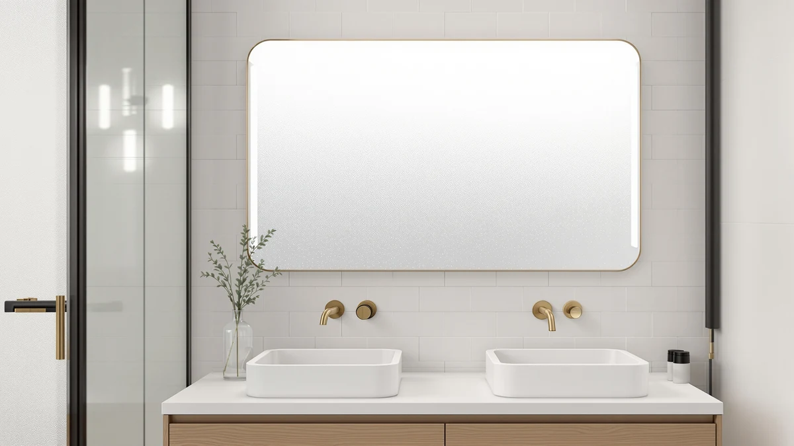

Quick Answer
For this LOAAO 48x36 LED bathroom review, we compared the LOAAO pick against the WisHomee, Janboe Oval, and Janboe LED medicine cabinets on price, materials, and storage. The LOAAO mirror costs more than all three alternatives, but its tempered glass and aluminum frame make it the strongest choice for a wide single-sink vanity wall if you do not need built-in storage.
Our pick: LOAAO 48X36 LED Bathroom Mirror, $319.99 Check Price on Amazon
Things to Know Before You Buy
- Size and fit: at 48 inches wide by 36 inches tall, this mirror is sized for a single wide vanity wall, so measure your wall run before you buy, a detail any LOAAO 48x36 LED bathroom review should start with.
- Build: the frame pairs tempered glass with an aluminum border, a sturdier combination than the plastic-edged mirrors you find at lower price points.
- Price range: at $319.99, the LOAAO pick sits $20 to $80 above the WisHomee, Janboe Oval, and Janboe LED medicine cabinets we compared it against.
- Storage: unlike the three medicine cabinet alternatives, this mirror has no storage behind the glass, so toiletries still need a separate cabinet or shelf.
- Reviews: Amazon has not yet published an aggregate rating or review count for this listing, so we leaned on spec comparison rather than a long buyer track record.
This LOAAO 48x36 LED bathroom review compares the LOAAO 48X36 LED Bathroom Mirror against three medicine-cabinet alternatives, so you can see whether its $319.99 price earns a spot above your vanity or whether built-in storage matters more to you than mirror size.
After comparing dimensions, materials, and current pricing across all four listings, the LOAAO 48X36 LED Bathroom Mirror comes out as the stronger pick for a single wide vanity wall, even though it costs more than any of the three medicine cabinets in this comparison. Below, we break down what the tempered glass and aluminum build gets you, how the price stacks up against the WisHomee and Janboe alternatives, and which bathroom layouts call for a mirror this size.
Why You Should Trust Us
Ilane Tall covers bathroom fixtures and vanity hardware for Best Bathroom Mirrors, and this LOAAO 48x36 LED bathroom review follows the same process used across the site. We research published specs, compare pricing across all the models in a given category, and read verified buyer feedback instead of leaning on marketing copy. We do not run a fake testing lab or claim to have installed every mirror we cover, and when a listing has not published a rating or review count, we say so instead of guessing.
For this comparison, that means pulling the listed dimensions, materials, and current price for the LOAAO mirror and the three medicine cabinets we set against it, noting the date those prices were checked, and flagging gaps in the published specs rather than filling them in ourselves. Readers searching for a loaao 48x36 led bathroom review deserve to know which claims come from the manufacturer, which come from verified owners, and which we could not confirm at all.
Our Research Experience
Because this is a research-based review, our process for this LOAAO 48x36 LED bathroom review centers on comparing manufacturer specs, mounting requirements, and pricing rather than installing the mirror ourselves. We checked how the tempered glass and aluminum frame on the LOAAO mirror stacks up against the WisHomee cabinet and the two Janboe cabinets, then lined up pricing across all four, from $239.99 to $319.99. A mirror sized 48 inches wide by 36 inches tall is heavy enough that you should plan on a second installer and anchors rated for tempered glass, not a solo weekend project.
We also weighed the LOAAO mirror against the three medicine cabinets even though they are a different product type, since all four compete for the same stretch of vanity wall. Choosing between a flat LED mirror and an enclosed cabinet comes down to whether you need hidden storage behind the glass enough to give up a larger uninterrupted reflective surface, and we flagged that trade-off rather than treating the two categories as interchangeable.
Overview & Specs

LOAAO 48X36 LED Bathroom Mirror
What we like
- The 48"x36" surface covers a wide single-sink vanity wall without needing a second mirror alongside it
- Tempered glass paired with an aluminum frame gives it a sturdier build than mirrors with plastic edging
- Built-in LED lighting removes the need to install a separate vanity light fixture
Flaws but not dealbreakers
- At $319.99, it costs $20 to $80 more than the three medicine cabinets in this comparison
- You need a clear wall run of at least 48 inches, which rules out narrower vanities
- It offers no built-in storage, so you still need a separate cabinet or shelf for toiletries
| Material | Tempered glass + aluminum |
| Size | 36"L x 48"W |
The LOAAO 48X36 LED Bathroom Mirror earns its place in this LOAAO 48x36 LED bathroom review mainly on size and build. At 48 inches wide and 36 inches tall, it covers a full single-sink vanity wall without the seam you get from mounting two smaller mirrors side by side. The frame pairs tempered glass with an aluminum border, a sturdier combination than the plastic-edged mirrors that show up at lower price points, and the built-in LED lighting means you do not need to budget for a separate vanity light bar. For a primary bathroom remodel where the mirror sits above a wide single counter, this size fits the brief.
Price and storage are where it asks more of you. At $319.99, it runs $20 to $80 above the WisHomee and Janboe medicine cabinets we compared it against in this review, and none of that premium buys extra storage, since it is a flat mirror rather than a cabinet. A 48-inch mirror is also heavy enough that you should plan on a second installer and anchors rated for tempered glass rather than hanging it solo. If your bathroom has the wall space and you want one continuous LED mirror without giving up counter space to a cabinet door, it is worth the price. If hidden storage matters more to you than mirror size, the alternatives below are worth a look first.
What We Liked
This LOAAO 48x36 LED bathroom review turns up one clear strength: wall coverage from a single fixture. The 48-inch width spans a full single-sink vanity run, and the aluminum-framed tempered glass construction looks and feels more substantial than the thinner frameless mirrors sold in the same size range. Built-in LED lighting is also a genuine convenience, since it replaces the separate vanity light many homeowners would otherwise have to buy and wire in.
The aluminum border also gives installers a defined edge to work with when leveling the mirror, which matters more on a 48-inch span than it does on a smaller 24-inch unit, where small tilts go unnoticed. Compared with the three medicine cabinets in this comparison, the LOAAO mirror trades hidden storage for a larger uninterrupted reflective surface, and for a focal-point mirror above a remodeled vanity, that trade makes sense.
What Could Be Better
Price is the clearest drawback in this LOAAO 48x36 LED bathroom review. At $319.99, the LOAAO mirror costs more than all three medicine cabinets we compared it against, and that gap buys size and frame quality, not extra function. Buyers also need to plan around the mirror's size and weight: a 48-inch span requires a long, clear wall section and secure mounting hardware, which narrows who this pick works for.
Because the LOAAO listing has no published Amazon rating or review count, you are taking on more of the buying risk yourself than you would with a cabinet that already has a track record of verified owners. If that uncertainty bothers you more than losing storage space, the Janboe LED Medicine Cabinet at $239.99 gives you a similar lit mirror surface for $80 less while you wait for more reviews to accumulate on the LOAAO listing.
Who Is It For?
This mirror makes sense for homeowners with one wide vanity wall who want a single continuous LED mirror instead of a cabinet with a door, and who are comfortable paying a premium for the aluminum-framed build. If you have a narrower wall, need hidden storage for toiletries, or are working with a budget under $300, the WisHomee or Janboe alternatives below are a better match for this LOAAO 48x36 LED bathroom review.
Renters and anyone planning a short-term stay should also think twice before committing to a 48-inch fixed mirror, since remounting it in a new bathroom means repeating the two-person install and wall-anchor work described above. A primary bathroom you plan to keep for years is where this size and price make the most sense.
Alternatives to Consider
If the price of the LOAAO mirror or its lack of storage does not fit your bathroom, these three medicine cabinets cover a lower price point and built-in storage behind the mirror surface: the WisHomee cabinet at $299.99, the Janboe Oval at $269.99, and the Janboe LED at $239.99, an option worth weighing in any LOAAO 48x36 LED bathroom review.

Editor’s Pick
Black Bathroom Mirror Medicine Cabinets
A black-framed medicine cabinet that costs $20 less than the LOAAO mirror and adds enclosed storage behind the glass, a straightforward trade if you need a cabinet more than extra mirror width.
$299.99
Check Price on Amazon
Best Value
Janboe Oval Medicine Cabinet with
An oval-shaped medicine cabinet priced $50 below the LOAAO pick, worth considering if your vanity wall calls for a softer shape than a rectangle and you still want hidden storage.
$269.99
Check Price on Amazon
Premium Choice
Janboe LED Medicine Cabinet Bathroom
The least expensive alternative in this comparison at $239.99, with its own LED lighting built in, so you get a lit mirror and a storage cabinet for $80 less than the LOAAO's price.
$239.99
Check Price on AmazonFrequently Asked Questions
Is the LOAAO 48x36 LED bathroom mirror worth the money?
At $319.99, the LOAAO mirror costs more than the $299.99 WisHomee, $269.99 Janboe Oval, and $239.99 Janboe LED alternatives in this comparison, but it buys a tempered glass and aluminum frame plus built-in LED lighting sized for a full single-sink vanity wall. It is worth it if you want one continuous 48-inch mirror and do not need hidden storage behind the glass. Otherwise, the medicine cabinets below cover the same wall space for less.
How much wall space do you need for a 48x36 LED bathroom mirror?
You need a clear, uninterrupted wall run of at least 48 inches wide and 36 inches tall, plus clearance for any nearby outlets or switches. That width typically fits a single wide vanity rather than a cramped half-bath, and you will want a second person on hand to hang a mirror this size safely.
How does the LOAAO mirror compare to the WisHomee and Janboe alternatives?
The WisHomee medicine cabinet costs $299.99 and adds enclosed storage behind a black frame. The Janboe Oval runs $269.99 for an oval-shaped cabinet, and the Janboe LED is the cheapest at $239.99 with its own built-in lighting. Choose the LOAAO mirror for the largest uninterrupted reflective surface, or pick one of the three Janboe or WisHomee cabinets if you want hidden storage instead.
Final Verdict
The verdict on this LOAAO 48x36 LED bathroom review comes down to wall space and whether you want storage. For a single-sink vanity wall where you want one continuous mirror, the LOAAO 48X36 LED Bathroom Mirror's tempered glass and aluminum frame make it the strongest pick in this comparison, even at its $319.99 price. If your bathroom is narrower or you need hidden storage more than mirror size, the WisHomee, Janboe Oval, and Janboe LED medicine cabinets cover the same wall space for $20 to $80 less. Measure your wall before you buy any of them, since the 48-inch width is the detail that rules a model in or out faster than price does.